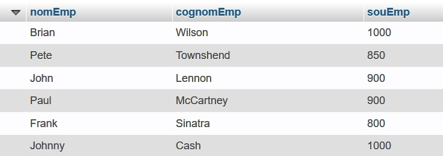
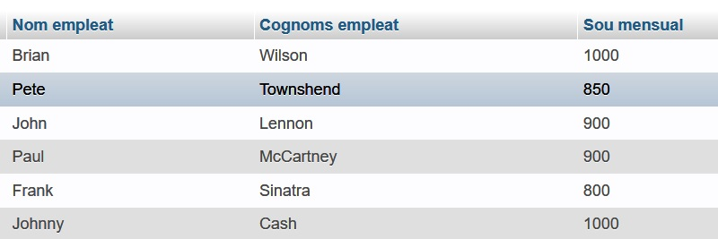
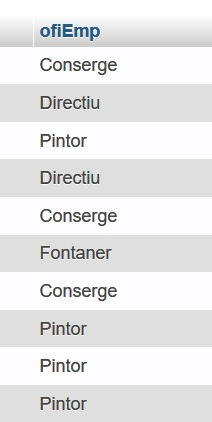
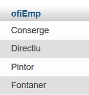

Operadors BETWEEN, IS NULL i IN

Operador BETWEEN
Podem utilitzar l'operador BETWEEN per comprovar que un valor estiga dins d'un interval. Funciona amb números i amb cadenes.
Operador BETWEEN
Exemple
Si volem mostrar els empleats que cobren entre 500 i 1000 euros, ho podem fer posant dues condicions unides per un AND.
SELECT * FROM empleats WHERE empSou >=500 AND empSou <=1000;
L'alternativa és utilitzar l'operador BETWEEN per indicar en la condició que volem els valors que estiguen entre dues quantitats:
SELECT * FROM empleats WHERE empSou BETWEEN 500 AND 1000;
Operador BETWEEN
Exemple
Si, pel contrari, volem llistar els empleats que no cobren entre 500 i 1000 euros, la manera més senzilla de fer-ho és afegir a la condició anterior l'operador NOT, que nega la condició.
SELECT * FROM empleats WHERE empSou NOT BETWEEN 500 AND 1000;
Operador IN
Suposem que volem llistar els empleats que cobren 500, 600, 700, 800 o 900 euros. Ho podem fer posant totes eixes condicions unides per un OR (no s'han de complir totes, en una és suficient):
SELECT * FROM empleats WHERE empSou=500 OR empSou=600 OR empSou=700 OR empSou=800 OR empSou=900;
Operador IN
Ara bé, també tenim un operador que ens facilita eixes consultes: IN. Amb eixe operador podem preguntar si un valor està en una llista. La mateixa consulta anterior, amb IN, seria així:
SELECT * FROM empleats WHERE empSou IN (500,600,700,800,900);
Per suposat, també podem negar la condició i mostrar els empleats que no cobren cap d'eixes quantitats:
SELECT * FROM empleats WHERE empSou NOT IN (500,600,700,800,900);
Columnes calculades
Columnes calculades
Entre el SELECT i el FROM hem de posar els noms de les columnes que voleu veure, però també podem posar altres coses com càlculs o expresions.
Columnes calculades
Exemple
Un llistat dels empleats que cobren més de 1000€ al mes seria:
SELECT nomEmp,cognomEmp,souEmp FROM empleats WHERE souEmp > 1000;
Si volem que aparega en el llistat el que cobren a l'any, sempre que se puga calcular no hi ha cap problema. Si sabem que els empleats cobren 14 pagues a l'any, podem fer un càlcul molt senzill:
SELECT nomEmp,cognomEmp,souEmp,souEmp*14 FROM empleats WHERE souEmp > 1000;
Així ens mostrarà en la columna souEmp el que cobren al mes, i en la columna souEmp*14 el que cobren a l'any.
Ordenar el resultat de la consulta
Ordenar el resultat de la consulta
Per defecte la sentència SELECT mostra les files en el mateix ordre que estan guardades en la taula. Si volem veure el llistat ordenat d'una altra manera, ho podem fer afegint la clàusula ORDER BY. Podem especificar per quina columna o columnes volem que ordene el llistat, i també si volem que l'ordre siga ascendent (per defecte) o descendent.
Ordenar el resultat de la consulta
Exemple
SELECT * FROM empleats;
mostra tots els empleats en l'ordre que estan a la taula.
SELECT * FROM empleats ORDER BY cognomEmp;
mostra tots els empleats ordenats alfabèticament per cognoms (de l'A a la Z)
SELECT * FROM empleats ORDER BY cognomEmp DESC;
mostra tots els empleats ordenats alfabèticament per cognoms però en ordre descendent (de la Z a l'A)
Títols de les columnes
Títols de les columnes
Si tenim noms de columnes com ara nomEmp, cognomEmp, souEmp, etc., i sobretot si tenim columnes calculades, quan fem el llistat potser voldrem canviar els títols.
Ho podem fer amb la clàusula AS en el SELECT.
Títols de les columnes
Si fem
SELECT nomEmp, cognomEmp, souEmp FROM empleat;
obtindrem:

Si volem que els noms de les columnes canvien i tinguen més significat, ho podem fer amb la clàusula AS posant-li un alias a les columnes que ens interessen.
Títols de les columnes
Exemple
SELECT nomEmp AS `Nom empleat`, cognomEmp AS `Cognoms empleat`, souEmp AS `Sou mensual` FROM empleat;
donaria com a eixida: 
Mostrar valors únics
Mostrar valors únics
De vegades ens interessa mostrar els valors que hi ha en una columna sense que apareguen valors repetits. Suposem que ens demanen una consulta que mostre quins oficis tenen els nostres empleats. El primer que faríem, segurament, és:
SELECT ofiEmp FROM empleat;
El resultat seria algo així: 
Mostrar valors únics
Com veiem, ens mostra els oficis repetits perquè torna tots els oficis de tots els empleats. Com fer que cada ofici aparega només una vegada? Utilitzant la clàusula DISTINCT en la consulta, que fa que no apareguen valors repetits.
SELECT DISTINCT ofiEmp FROM empleat;
Ara el resultat serà:

Exercici 1
Si en la base de dades cines tenim una taula cine amb l'estructura:
- codigo (un id del cine)
- nombre (el nom del cine)
- ciudad (el nom de la població on està el cine)
Com podríem fer una consulta que ens mostre la llista de poblacions on hi ha cine? I si una ciutat té més d'un cine, com podem fer que només aparega una vegada en el llistat?